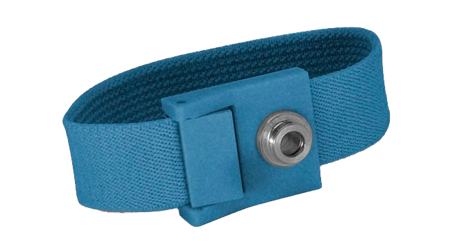
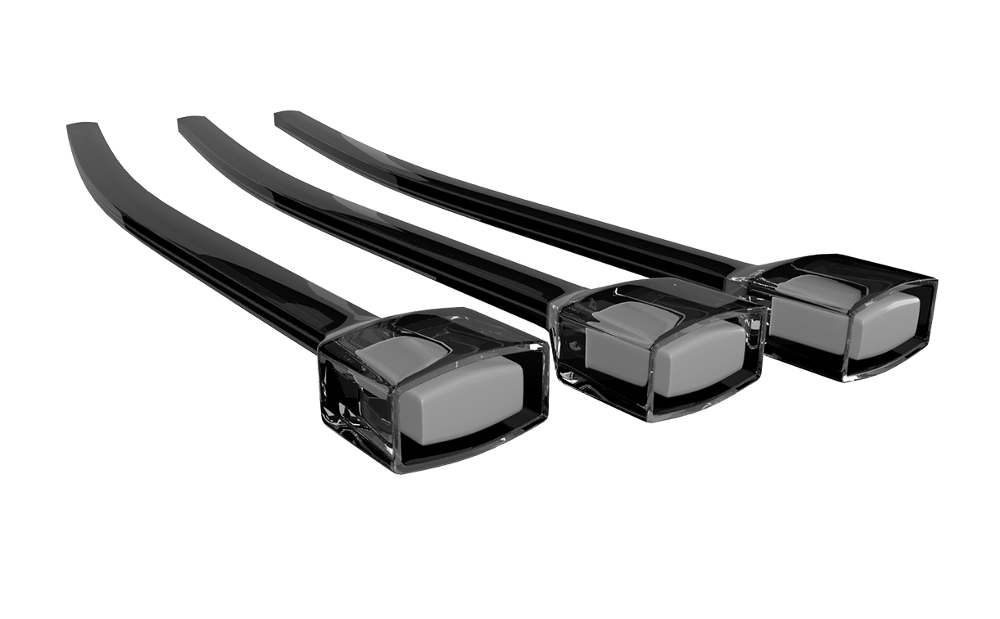

<ion-header>
  <ion-toolbar>
    <ion-buttons slot="start">
      <ion-menu-button></ion-menu-button>
    </ion-buttons>
    <ion-title>
      Acessórios
    </ion-title>
  </ion-toolbar>
</ion-header>

<ion-content padding>

  <ion-slides pager="true">
    <ion-slide>
      <h5 class="titulo">Pulseira ILIB</h5>
        
      <p class="descricao">
        Pulseira para aplicação de laserterapia intravenosa (ILIB).
        <br>
        <br> Características técnicas:
        <br>
      </p>
      <ul class="descricao" style="margin-top:-15px; margin-left:15px;">
        <li>Dimensões: 18x2x0,2 cm</li>
        <li>Peso: 0,2 Kg</li>
        <li>Material: Nylon Flexível</li>
        <li>Cor: Azul</li>
      </ul>
      <ion-button expand="full" color="danger">Mais Informações</ion-button>
    </ion-slide>
    
     
    <ion-slide>
      <br>
      <h5 class="titulo">Fibra Óptica</h5>
        
      <ul class="descricao" style="margin-top:-15px; margin-left:15px;">
        <li>Dimensões: 7 cm cada</li>
        <li>Peso: 0,33 Kg cada</li>
        <li>Cor: Transparente</li>
      </ul>
      <ion-button expand="full" color="danger">Mais Informações</ion-button>
    </ion-slide>
  </ion-slides>
  
  <ion-fab vertical="bottom" horizontal="end" slot="fixed" style="margin-bottom: 10px; margin-right: 10px;">
    <ion-fab-button color="danger" (click)="goFone()">
      <ion-icon name="call"></ion-icon>
    </ion-fab-button>
  </ion-fab>

</ion-content>